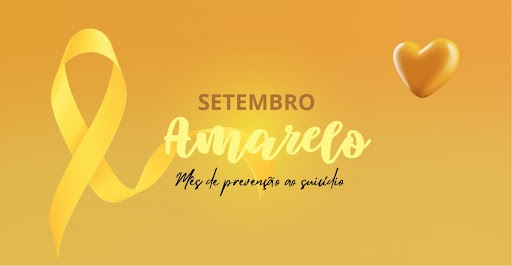

O que e o Setembro Amarelo❔
O Setembro Amarelo é uma campanha nacional de conscientização sobre a prevenção ao suicídio,
realizada todos os anos durante o mês de setembro.
Criada em 2015 no Brasil, a iniciativa é promovida pela Associação Brasileira de Psiquiatria
(ABP) em parceria com o Conselho Federal de Medicina (CFM), e tem como objetivo quebrar tabus,
reduzir o estigma e incentivar o diálogo sobre saúde mental.
Por que Setembro❔
O dia 10 de setembro é reconhecido
mundialmente como o Dia Internacional de
Prevenção ao Suícidio. Durante todo o mês,
instituições, escolas, empresas e órgãos
públicos se mobilizam para sensibilizar a
população e oferecer informações e apoio a
quem precisa.

Problema de saúde pública.

700 mil pessoas morrem por suicídio todos os anos.

1 morte a cada 46 minutos.
A importancia da campanha
A maioria dos casos pode ser evitada com apoio psicológico,
acompanhamento médico e uma rede de acolhimento.
Como ajudar❔
Ouça sem julgamentos: muitas vezes, a pessoa só precisa ser acolhida.
Ofereça apoio e companhia: pequenas atitudes podem fazer diferença.
Incentive a busca por ajuda profissional: psicólogos, psiquiatras e
grupos de apoio são fundamentais.
Compartilhe informações seguras: evite conteúdos
que romantizem ou incentivem o sofrimento
Onde buscar ajuda❔
Se você ou alguém que você
conhece está passando por um momento difícil,
não hesite em pedir ajuda.
Como participar da campanha ❔
Ilumine prédios e monumentos de amarelo.
Promova palestras, rodas de conversa e ações educativas.
Compartilhe conteúdos informativos nas redes sociais.
Vista-se de amarelo e ajude a espalhar a mensagem de esperança.